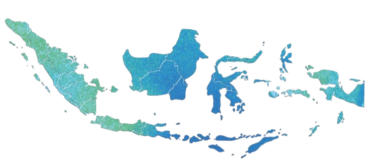

Input Data Super Cepat
Tambah dan perbarui data warga hanya dalam hitungan detik.
 DataKita
DataKita
Platform pendataan warga berbasis digital yang membantu RT/RW dan desa mengelola data secara aman, rapi, dan transparan tanpa pencatatan manual.
Mulai Sekarang
Tambah dan perbarui data warga hanya dalam hitungan detik.
Data tersimpan otomatis dan aman dari risiko kehilangan.
Rekap data siap cetak kapan saja saat dibutuhkan.
“Pendataan jadi sangat rapi, cepat, dan tidak ribet lagi.”
— Ketua RT“Sekarang tidak takut data hilang karena semua tersimpan aman.”
— Sekretaris RW“Mudah digunakan walaupun bukan orang IT.”
— Perangkat DesaGunakan DataKita sekarang dan rasakan kemudahan mengelola data warga.
Coba Sekarang